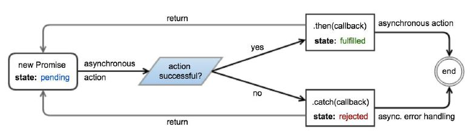

A Promise object represents an operation which has produced or will eventually produce a value. Promises provide a robust way to wrap the (possibly pending) result of asynchronous work, mitigating the problem of deeply nested callbacks
A promise can be in one of three states: pending — The underlying operation has not yet completed, and the promise is pending fulfillment. fulfilled — The operation has finished, and the promise is fulfilled with a value. This is analogous to returning a value from a synchronous function. rejected — An error has occurred during the operation, and the promise is rejected with a reason. This is analogous to throwing an error in a synchronous function. A promise is said to be settled (or resolved) when it is either fulfilled or rejected. Once a promise is settled, it becomes immutable, and its state cannot change. The then and catch methods of a promise can be used to attach callbacks that execute when it is settled. These callbacks are invoked with the fulfillment value and rejection reason, respectively.